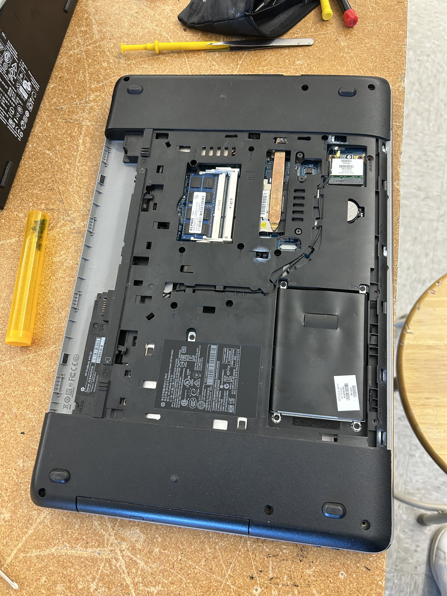

This project involved repurposing an older HP ProBook 470 G1 laptop into a self-hosted cloud server. The goal was to establish personal cloud storage and secure remote access without relying entirely on commercial cloud storage.
Project / Self-Hosted Infrastructure
Nextcloud Self-Hosted Server
Repurposing an older HP ProBook into a personal cloud infrastructure using Linux, Docker, Nextcloud and Tailscale.
HP ProBook 470 G1
Linux
Docker
Nextcloud
Tailscale
01. Project Overview
02. Hardware & Infrastructure
Hardware Platform
HP ProBook 470 G1, refurbished with a replacement battery and SSD upgrade.
Software Stack
Linux, Docker, Docker Compose, Nextcloud and Tailscale.
03. Deployment & Configuration
Deployed Nextcloud using Docker and configured Tailscale to provide secure remote connectivity to the server.
04. Project Documentation
Hardware and deployment evidence from my self-hosted Nextcloud project.



05. Results & Lessons Learned
Successfully established a self-hosted cloud environment using refurbished hardware. Gained practical experience with Linux administration, Docker-based deployment and remote network access.